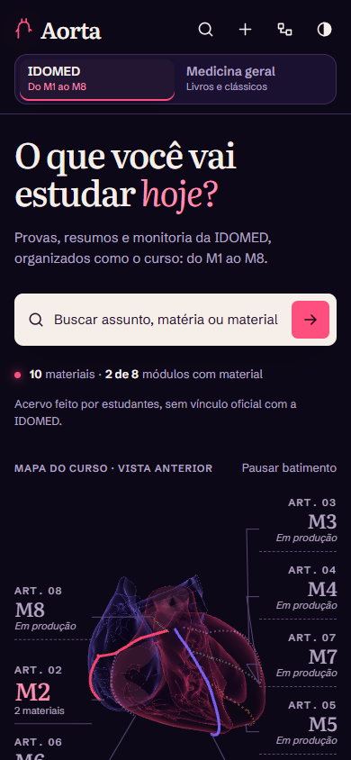
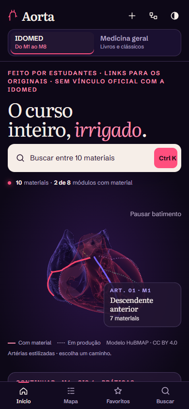
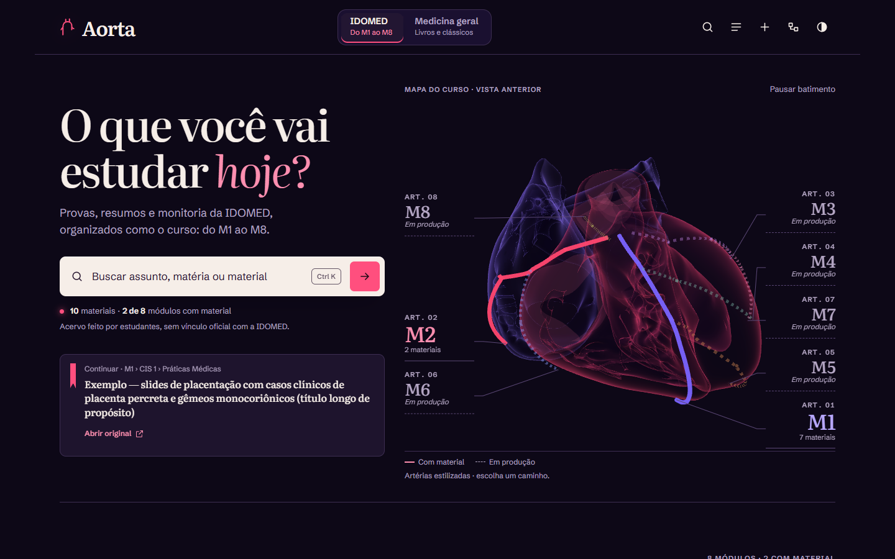
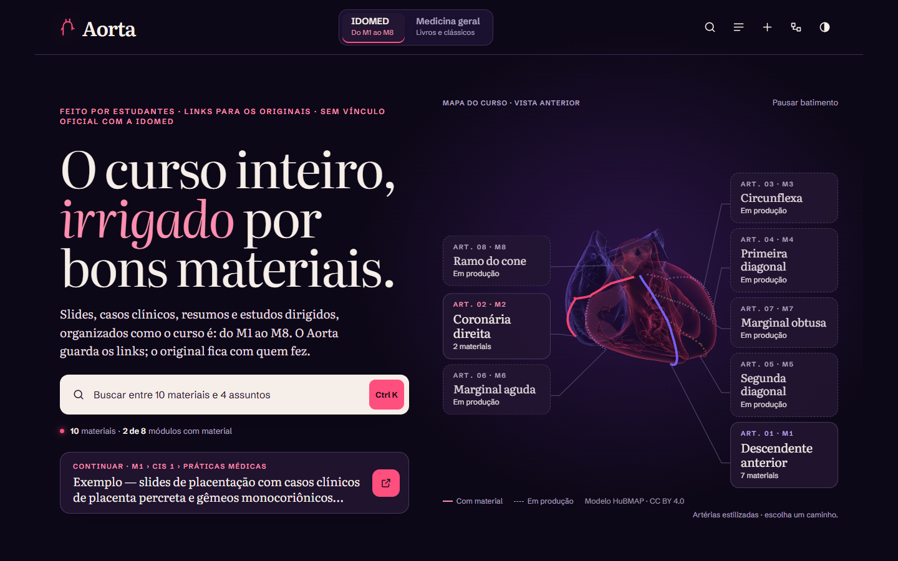
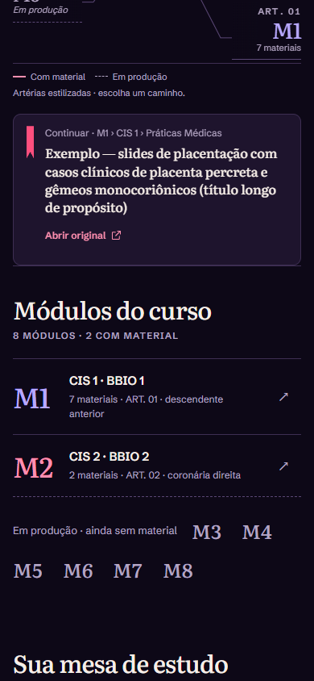
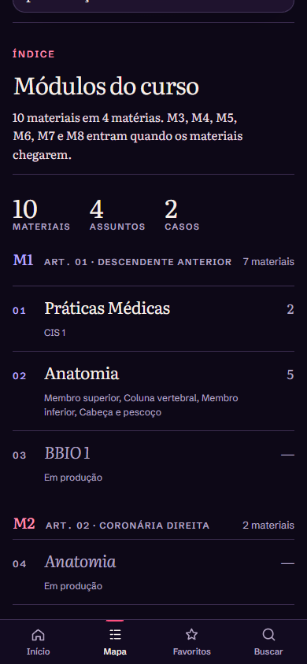
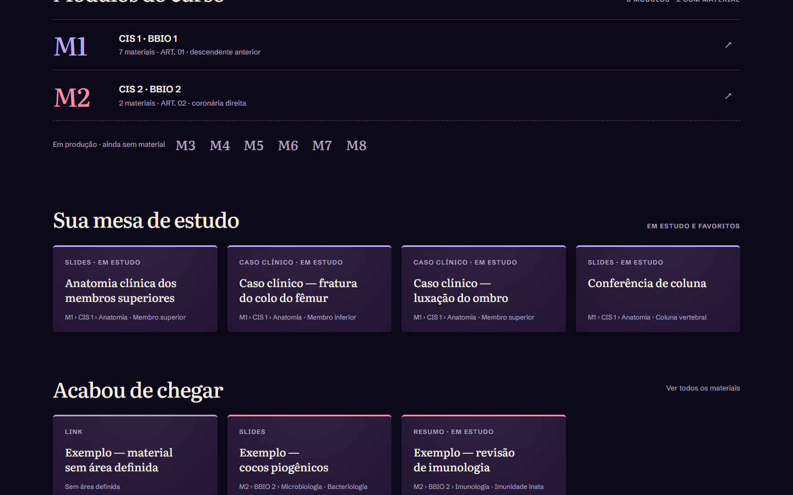
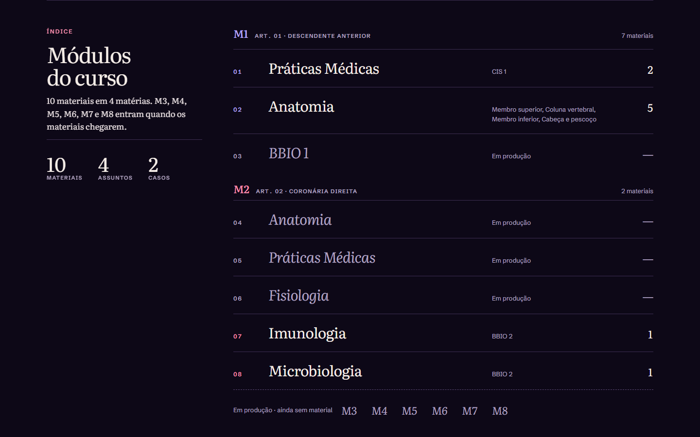

Pares antes|depois a 390 e 1440 px, com os dados fictícios dos testes. Capturas estáticas não mostram o movimento; ele está nos vídeos (artefato separado) e nas medidas em docs/ui-progresso.md.
Início (IDOMED) — celular

Antes · antes/inicio-idomed@390-dark.png

Depois · depois/inicio-idomed@390-dark.png
Início (IDOMED) — computador

Antes · antes/inicio-idomed@1440-dark.png

Depois · depois/inicio-idomed@1440-dark.png
Início ao rolar: índice e casos — celular

Antes · antes/inicio-idomed-rolado@390-dark.png

Depois · depois/inicio-idomed-rolado@390-dark.png
Início ao rolar: índice e casos — computador

Antes · antes/inicio-idomed-rolado@1440-dark.png

Depois · depois/inicio-idomed-rolado@1440-dark.png